该图片由dima_goroziya在Pixabay上发布
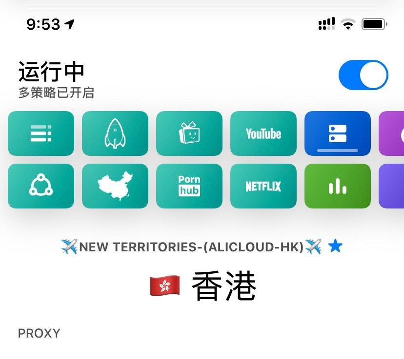
目前我用得最顺手的便是 QuantumultX，丰富的协议支持（SSR/SS/Vmess...），也不用担心哪家 机场 因协议不支持而用不了；丰富的自定义玩法（加图标/策略偏好/组/分流/），各种远程脚本 支持，解锁各类姿势；
在此文就各类软体的协议，展开对比说明；
以上。
| 软件 | 协议支持 | 平台支持 | 开源与否 |
|---|---|---|---|
| Shadowrocket | SS/SSR/Vmess/ | iOS | $2.99 |
| Quantumult | SS/SSR/Vmess/ | iOS | $4.99 |
| Quantumult X | SS/SSR/Vmess/ | iOS | $4.99 |
| Surge4 | SS | iOS | $49.99起 |
| v2rayNG | SS/Vmess | Android | 免费 |
| v2rayN | SS/Vmess/Trojan | Windows | 免费 |
| ClashX | SS/Vmess | Mac | 免费 |
| ClashW | SS/Vmess | Windows | 免费 |
| ClashA | SS/Vmess | Android | 免费 |
| Maying | SSR | Android | 免费 |
| Surfboard | SS | Android | 免费 |
| Kitsunebit | SS/Vmess | Android/iOS | 免费/$4.99 |
本文隶属于 实用工具/科学上网 分类，点击分类名称可以查看更多相关文章；如有遗漏，欢迎联系我们进行补充；
就实用性与便捷性而言（价格的经济性，以及丰富的协议支持），iOS建议加持 Quantumult X 即可；Android SS/Vmess 协议建议加持 V2RayNGSSR协议建议加持Maying，基佬蓝；Windows SS/Vmess协议建议加持V2RayN即可；Mac SS/Vmess协议建议加持ClashX；（*Android 用户如果不能直接从Google Play下载App，可参考：无需安装谷歌服务框架，在线下载Google Play应用（APK）的方法。（附Go谷歌安装器下载与安装））
我已经很久不在电脑使用SSR协议的机场了，Windows/Mac平台支持SSR协议的客户端我建议大家使用机场提供（一般在节点或用户中心处）的下载链接。
*关于软件如何配置：1.相关机场的帮助中心或多都会提供各类软体的通用性教程；2.如实在没有，Google 搜索，软件名+怎么用，在此博主不再一一赘述；
*本文末尾附注部分提供了一些软体的进阶玩法给大家；
| 软件 | 教程 | 备注 |
|---|---|---|
| surfboard | 简明教程 | 无 |
| v2RayNG | 简明教程 | 无 |
| v2RayN | 简明教程 | 无 |
| ClashW/X | 简明教程 | 无 |
| ClashA | 简明教程 | 无 |
| Shadowsocket | 简明教程 | 无 |
| Quantumult | 简明教程 | 无 |
| Quantumult X | 简明教程 | 无 |
*以上简明教程对应链接，如点击后不能跳转到相关教程位置，请在文章内自行搜索软件关键词；参考教程前，请确保你能找到机场订阅链接；如果不知道订阅是什么？请参考：本教程通用性说明；
[post cid="2549" cover="https://limbopro.xyz/usr/uploads/2019/09/396172038.jpg"/]
| App | 讨论群组 | 备注 |
|---|---|---|
| QuantumultX | https://t.me/quantumultapp | 无 |
| Surge | https://t.me/loveapps | 无 |
| ClashA | https://t.me/clash_android_discuss | 无 |
*目前较为活跃且友爱的TG群组；
除了上网？还想用 机场 加速海外服务器打游戏？有两个较为出名的项目可以了解一下；
| 软件 | 协议支持 | 平台支持 | 备注 |
|---|---|---|---|
| SSTap | SSR | Windows | 开源 |
| Netch | SS | Windows | 开源 |
SSTap 是个人开发者编写的，支持 SSR 协议的客户端。其通过使用 tun2socks 调用虚拟 TAP 接口来实现了类 VPN 的全局代理效果，可以正常代理不遵循系统代理设置的应用程序。
Netch 是一款 Windows 平台的开源游戏加速工具，Netch 可以实现类似 SocksCap64 那样的进程代理，也可以实现 SSTap 那样的全局 TUN/TAP 代理，和 shadowsocks-windows 那样的本地 Socks5，HTTP 和系统代理。至于连接至远程服务器的代理协议，目前 Netch 支持以下代理协议：Shadowsocks，Vmess，Socks5，ShadowsocksR
*支持的游戏具体可看作者更新日志；如有遗漏，欢迎联系我们进行补充；
[post cid="1423" cover="https://limbopro.xyz/usr/uploads/2019/08/728231641.jpg"/]
[post cid="2787" cover="https://limbopro.xyz/usr/uploads/2019/09/1975249076.jpg"/]
[post cid="4182" cover="https://limbopro.xyz/usr/uploads/2019/10/3546260568.jpg"/]
[post cid="3629" cover="https://limbopro.xyz/usr/uploads/2019/11/540587537.png"/]
[post cid="3833" cover="https://limbopro.xyz/usr/uploads/2019/10/641260207.jpg"/]
[post cid="2910" cover="https://limbopro.xyz/usr/uploads/2019/09/1752548461.jpg"/]
[post cid="2561" cover="https://limbopro.xyz/usr/uploads/2019/09/2033351625.jpg"/]
]]>已论证Appstore 抓包IPA并不能安装；
如需正常下载IPA或安装IPA参考：使用iMazing 轻松下载/或安装IPA文件
[post cid="3925" cover="https://limbopro.xyz/usr/uploads/2019/10/2586990184.png"/]
以上。
以下为本文正文；
以下针对IPA的抓包教程已失效，仅供学习参考；
学会抓包，或许会有许多好处，比如抓Pornhub视频的下载链接（一个思路，虽然有iOS捷径）下载以备份IPA；（我们常说备份，是一剂后悔药，或许某个版本的）IPA拥有的某个特性是未来更新中不再有的，所以常常会想着滚回之前版本；
1.看网络活动日志；
2.看时间；
3.抓行为特征；
用好一个工具不难，只要肯放弃。
]]>可以用，真开心。
https://t.me/limboprossr/830
via Tiktok（抖音国际版）解锁成功案例；
本文隶属于 实用工具/科学上网 分类，点击分类名称可以查看更多相关文章；
*关注TG频道或群组 https://t.me/limboprossr ，及时收讯不失联。
抖音海外版/国际版；抖音短视频简称抖音，是一款移动电话上影片的社群应用程序，用户可录制15秒钟的短片，能轻易完成对口型，并内置特效，用户可对影片留言，自2016年9月于今日头条孵化上线，定位为适合中国年轻人的音乐短影片社区，应用为垂直音乐的UGC短视频，2017年以来获得用户规模快速增长。 维基百科
Tiktok 用户界面截图 iOS端
1.前人栽树后人乘凉，感谢 花姐，NobyDa；
2.以下步骤其实很简单；
3.涉及 Surge/Quantumult/Shadowrocket /QuantumultX 的两个功能模块；
4.[Rewrite] (即复写，将网络请求改写)；
5.以及 [MitM]（即中间人攻击）；
6.通过新增[Rewrite]规则和[MitM]达到伪造请求的目的；
7.这样Tiktok就会把你当成某个地区的用户；
8.而推送相关地区的内容给你了；
*当你开启 Surge/Quantumult/Shadowrocket /QuantumultX 时，它们已经接管了你的所有网络请求；
[post cid="3833" cover="https://limbopro.xyz/usr/uploads/2019/10/641260207.jpg"/]
*呐，这是一篇 Surge/Quantumult/Shadowrocket /QuantumultX 通用性进阶学习资料，告诉你分流规则/模式是什么，网络请求日志怎么看，MitM 是否命中等等；
以上。
12.17.2019 Tiktok 最新可用情报
*以下各软体配置教程中，Surge/Quantumult/QuantumultX/Shadowrocket 默认模式使用规则模式/规则分流/配置模式，请不要全局代理/全部代理或直连模式；（不懂什么是直连/全局代理/分流模式？这个教程不适合你）。
| 项目 | 国家或地区 | 版本可用性 |
|---|---|---|
| Tiktok | 美区 | v14.0.0（最新版本） |
| Tiktok | 港区 | v9.1.0（最新版本） |
| Tiktok |
1.新的 [Rewrite] 规则已支持 Tiktok 最新版本；
2.无需抓包旧版Tiktok IPA；
[Rewrite] （12.17.2019）最新
# TikTok
(?<=(carrier|account|sys)_region=)CN url 307 JP
# Resso
(?<=(carrier|account|sys|sim)_region=)cn url 307 inHostname（12.17.2019）最新
api*.tiktokv.com
api*.musical.ly
api*.amemv.com
aweme*.snssdk.comvia Quantumult(X) 群友贡献；
不会添加[Rewrite] 或 hostname ？可参考下方各软体的详细教程（参考操作步骤操作即可，[Rewrite] 或 hostname部分需填写的内容，请参考以上最新的内容，其他继续按操作步骤做）；
| 项目 | 国家或地区 | 版本可用性 |
|---|---|---|
| Tiktok | 美区 | v13.4.0及之前版本 |
| Tiktok | 港区 | v8.4.0及之前版本 |
| Tiktok | 待更新 | 待更新 |
*版本可用性说明：可用性是指可与 Surge/Quantumult/Shadowrocket /QuantumultX 配合，进行解锁区实现观看Tiktok 海外各区域内容；（App 每次更新都有对应的版本号，这些更新意外着不同程度的改动，升级，优化等等；不同版本的App有着不一样的特性；）
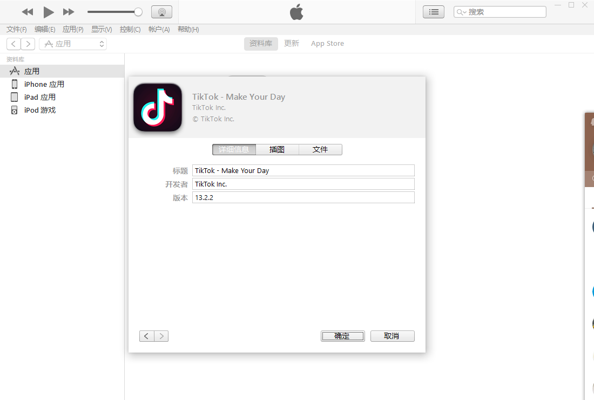
1.Tiktok 旧版本IPA可使用 fiddler/ Charles 进行抓包，实现APP版本降级；
我找到的一些实用性很高的抓包资料
1.Windows + fiddler 抓包IPA实现App降级：https://zhuanlan.zhihu.com/p/56622577 + 安装 fiddler后记得 给 Fidder 配置证书 （*Windows + fiddler 抓包很简单，参考教程步骤多看两遍，基本上小白也可以很容易就上手；）
2.Mac + 利用Charles Proxy 下载旧版本iOS App（IPA）：https://sspai.com/post/36171 （有点糙）
3.仅需三步，免费使用iMazing 安装IPA文件（旧版本）
附注：查看App版本号App 版本编号查询 iOS捷径 / 捷径社区
以上。
以下为本文正文；
1.拥有Surge3及以上版本授权用户；
2.并已配置有机场/服务器；
3.拥有非大陆地区AppleID并已下载Tiktok；
*本教程基于 Surge 为中文的操作界面，打开Surge-More-APPEARANCE 模块下-Language 设置语言为Chinese；
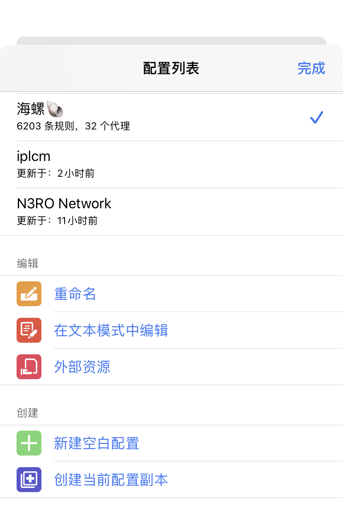
如上图，选择任意可用的配置文件，举例选择海螺，点击编辑模块下，在文本模式中编辑，如果提示托管配置不可被编辑...创建副本再进行修改。，点击好的，找到创建-创建当前配置副本-任意命名。
选中刚刚创建的副本，点击在文本中编辑，找到如下字眼：
在文本编辑模式中找到[URL Rewrite]字眼，并复制下方代码到该字眼下方；
(.*video_id=\w{32})(.*watermark=)(.*) $1 302
(?<=(carrier|account|sys)_region=)CN JP 307粘贴后，效果如下
[URL Rewrite]
(.*video_id=\w{32})(.*watermark=)(.*) $1 302
(?<=(carrier|account|sys)_region=)CN JP 307点击右上角完成，URL 重定向设置结束。
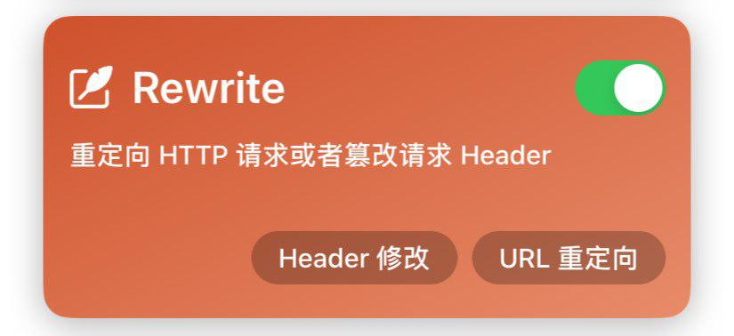
在 Surge 主页面， Rewrite 模块中，URL 重定向里面可以查看刚刚修改的效果，如下图：
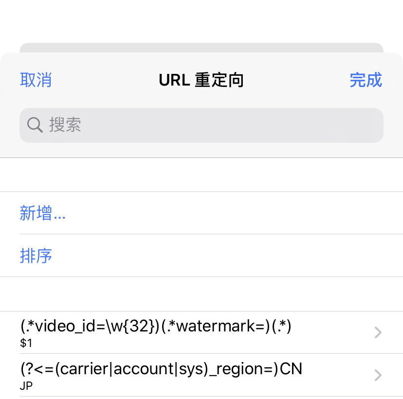
如需改/换区，亦可直接在这个Rewrite模块->URL 重定向下修改，找到(?<=(carrier|account|sys)_region=)CN ，编辑，替代文本处更换成其他国家或地区代码即可，例如HK，例如KR。其他国家或地区代码在本文文末可找到。
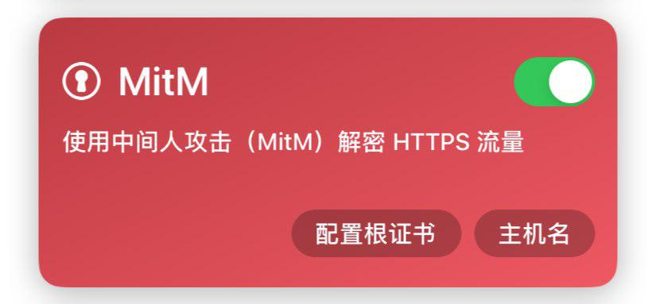
点击主机名，以进行配置，点新增；
api*.tiktokv.com
api*.musical.ly
api*.amemv.com
aweme*.snssdk.com效果如下：
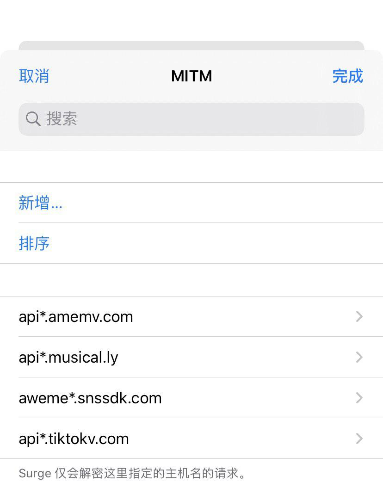
到此，MitM添加主机名完成。
1.点击，配置根证书，生成新的 CA 证书，生成后，点击安装证书，此时会跳转至 Safari，提示此网站...下载一个配置描述文件。您要允许吗？，点击允许，网页提示已下载描述文件；
2.进入 iOS 系统设置- 通用-描述文件-已下载的描述文件-选中，并安装，输入密码...完成描述文件安装；
3.进入 iOS 系统设置- 通用-关于本机-证书信任设置-针对根证书启用完全信任-选中刚刚安装的并启用即可；
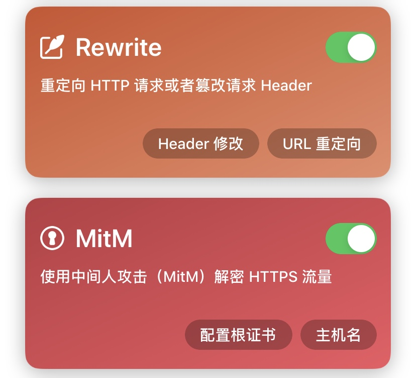
开启 mitm &rewrite按钮，开启 Surge，打开Tiktok，完事；
1.拥有 Quantumult 的用户；
2.并已配置有机场/服务器；
3.拥有非大陆地区AppleID并已下载Tiktok；
*本教程基于 Quantumult 为中文的操作界面，打开Quantumult-More-PERSONALIZATION 模块下-Language 设置语言为Chinese；
打开圈 Quantumult --更多--模块--选用TUN+HTTP(Default）；
1.设置-HTTPS解密-选择开启HTTPS解密-再点生成密钥及证书-右上角点击保存，此时会跳转至 Safari浏览器，提示此网站...下载一个配置描述文件。您要允许吗？，点击允许，网页提示已下载描述文件；
2.进入 iOS 系统设置- 通用-描述文件-已下载的描述文件-选中，并安装，输入密码...完成描述文件安装；
3.进入 iOS 系统设置- 通用-关于本机-证书信任设置-针对根证书启用完全信任-选中刚刚安装的并启用即可；
PS：这一步，跟Surge 第三步，配置根证书 略同，安装证书，信任证书。
添加订阅分流链接：前往Quantumult：设置--)订阅--)右上角加号--)分流--)链接处添加网址https://raw.githubusercontent.com/lhie1/Rules/master/Quantumult/Quantumult.conf --)名称输入分流俩字--)个性化戳出对勾--)右上角保存--)左划--)点选替换--)保存--)好
添加订阅链接阻止：设置-订阅-点击右上角+号，选择链接阻止-在链接填写处添加网址：https://raw.githubusercontent.com/lhie1/Rules/master/Quantumult/Quantumult_URL.conf名称输入阻止俩字或任意取名-选择包含主机名-点击右上角保存-选中刚刚保存的链接阻止的名字阻止处，左划-点选增加-好；
不看美区直播的可跳过此步：设置-分流-搜索关键字如pstatp.com-戳进去将行为中的Direct改为Proxy-并开启远程解析TUN连接-右上角保存；
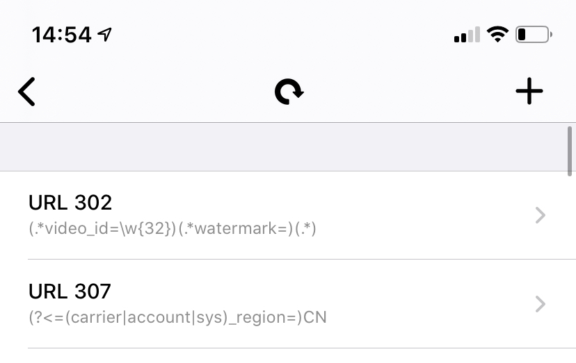
TikTok换区操作：打开Quantumult-设置-HTTP复写，如上图所示，找到(?<=(carrier|account|sys)_region=)CN，编辑，替换JP为任意其他国家或地区代码，例如MO、SG等；（跟Surge URL Rewrite 类似）；
以上，亲测有效。（10.10.2019）
1.拥有Shadowrocket 最新版本授权用户（设置-关于中查看版本：2.1.24及以上版本均可）；
2.并已配置有机场/服务器；
3.拥有非大陆地区AppleID并已下载Tiktok；
*本教程基于 Shadowrocket 为中文的操作界面，打开Shadowrocket-Settings-Language 设置语言为Chinese/中文简体；
1.Shadowrocket 2.1.24（717）之后版本：配置 – 点击一个配置文件（默认是default.conf） – 编辑配置 – 开启 HTTPS 解密 – 生成新的 CA证书 – `安装证书；
2.点右上角 – 安装 – 输入手机锁屏密码 – 再次点右上角 – 安装 – 安装 – 右上角 – 完成；
3.打开手机 – 设置 – 通用 – 关于本机 – 证书信任设置 – 找到 – Shadowrocket开头的选项 – 打开右侧开关 – 弹出警告框 – 继续；
4.再次打开Shadowrocket – 配置 – 找到[本地文件]内的配置文件，默认是[default.conf] – 点击 – default.conf – 编辑纯文本；
5.复制下面这一段，粘贴到App内编辑配置文档内（最后面），安装证书这一步其实跟Surge/Quantumult一模一样；
[Rule]
DOMAIN,api-h2.tiktokv.com,PROXY
DOMAIN,api2-16-h2.musical.ly,PROXY
DOMAIN,api2-19-h2.musical.ly,PROXY
[URL Rewrite]
(.*video_id=\w{32})(.*watermark=)(.*) $1 302
((carrier|account|sys)_region=)CN JP 302
[MITM]
hostname = ,api*.tiktokv.com,*.musical.ly,
enable = true然后点击右上角 – 保存；
如果需要观看不同国家的视频，只需要修改代码中的JP，比如
切换到 US ：((carrier|account|sys)_region=)CN US 302
切换到 UK：((carrier|account|sys)_region=)CN US 302
切换到台湾省：((carrier|account|sys)_region=)CN TW 302
QuantumultX 一键配置可参考：https://t.me/limboprossr/847
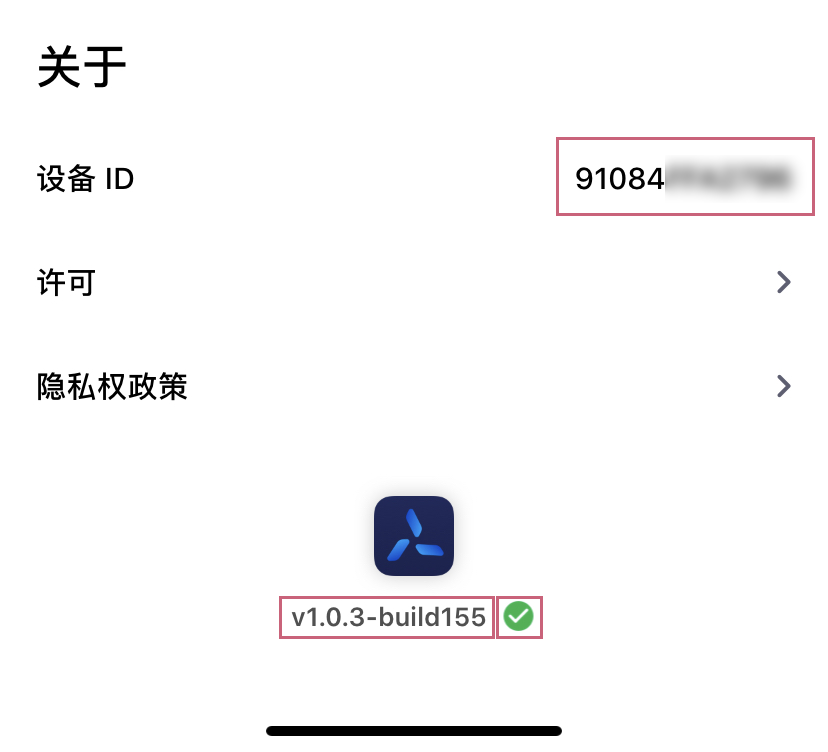
1.QuantumultX 已更新至商店版1.0.3（v1.0.3-build155），Tiktok（美区应用商店最新版，已登录Tiktok账户）使用正常；
2.1.QuantumultX 1.0.3 增加了设备ID（进入QuantumltX，点击右下角三菱按钮，点击右上角 ... 更多按钮，滑至底部关于，即可找到设备ID）；
2.2.QuantumultX 1.0.3 增加了共享账号侦测，如果你的QuantumultX是用共享AppleID下载的，则设备ID下方，版本部分则会出现红色问号，而不是绿色√（如上图）；
2.3.出现红色问号会导致 Rewrite (模块)功能不可用，其它功能不受影响，请支持正版。
1.这两天收到之前使用正常的用户反馈Tiktok使用不了，原因未知；
2.我个人目前使用完全正常（美区应用商店下载的Tiktok（目前最新版），并已登录Tiktok账户）；
3.如能提供更多有用细节可与我反馈；
*本步骤目前测试支持 QuantumultX v1.0.1 及之前版本；
复制脚本链接https://raw.githubusercontent.com/NobyDa/Script/master/QuantumultX/Js.conf
进入QuantumultX，点击页面右下角三菱按钮，找到Rewrite模块，点击引用，粘贴刚刚复制的链接，右上角点击确定，点击全部同步就可以下载脚本了；
*本步骤目前测试支持 QuantumultX v1.0.2 版本；
1.复制(?<=(carrier|account|sys)_region=)CN url 307 JP（*JP为国别代码）
进入QuantumultX，点击页面右下角三菱按钮，找到Rewrite模块，点击添加，粘贴刚刚复制的规则段落，右上角点击确定；
2.复制api*.tiktokv.com, api*.musical.ly, api*.amemv.com, aweme*.snssdk.com，进入QuantumultX，点击页面右下角三菱按钮，找到配置文件模块，点击编辑，滑至页面末尾；
找到[mitm]，在 hostname 后面粘贴，效果如下：
hostname = *.example.com, *.sample.com, vsco.co, *.my10api.com, *googlevideo.com, api.termius.com, api*.tiktokv.com, api*.musical.ly, api*.amemv.com, aweme*.snssdk.com*注意， ;hostname 前面的; 符号（注释符号），如果有这个符号，务必删掉；
*这一步其实跟Shadowrocket/Surge配置证书步骤等是一模一样的；
1.进入QuantumultX，点击页面右下角三菱按钮，找到MinM模块，点击生成证书，提示生成成功，点击安装证书此时会跳转至 Safari，提示此网站...下载一个配置描述文件。您要允许吗？，点击允许，网页提示已下载描述文件；
2.进入 iOS 系统设置- 通用-描述文件-已下载的描述文件-选中，并安装，输入密码...完成描述文件安装；
3.进入 iOS 系统设置- 通用-关于本机-证书信任设置-针对根证书启用完全信任-选中刚刚安装的并启用即可；
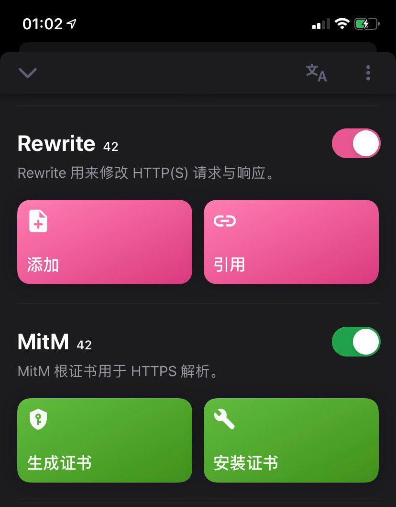
开启 Rewrite & MinM 如上图；
如想切换到其他地区，进入QuantumultX，点击页面右下角三菱按钮，找到Rewrite模块，点击添加，复制(?<=(carrier|account|sys)_region=)CN url 307 JP
将JP修改成其他地区英文缩写即可，其他国家或地区代码。
1.暂无，欢迎反馈。
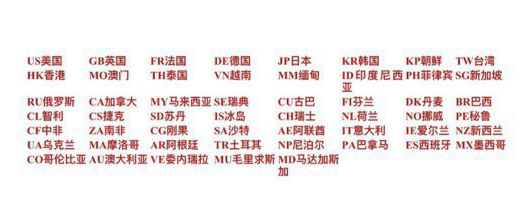
带你玩转QuantumltX & Surge，各种VIP解锁（例如VSCO会员/91...）
https://t.me/limboprossr/832
1.关注频道 https://t.me/limboprossr 不失联；
2.毒奶粉们（我管我的Fans）可联系 TG机器人 或发送 邮件 获取帮助；
3.或点击本页面右下角的聊天按钮联系；
新增 12条 IPLC 专线，共计 44+ 条 IPLC专线，专治各种开会，加上其他低倍率线路，共计66条；
特殊日子，IPLC 稳定依旧；
N3RO与卡车家族是同款老板（10.2019 转让交接完毕）；得益于大陆多点部署的BGP数据中心，通过IPLC专线连接至国外，不受任何外部干扰或QoS。并拥有川日/川港/京港/京美/京德/沪韩/沪日/沪港/深新/深港/沪新/杭港/沪美/川日/等IPLC中转线路；
大流量视频用户，预算有限的学生党可用另一个平台的产品，卡车家族丨1080秒开丨折后6.4元/月起丨50+节点丨SSR机场推荐。
via 机场专线 查看适合你的机场推荐；
以上。
]]>本文隶属于 科学上网 分类，点击分类名称可以查看更多相关文章；
]]>{kind=link}